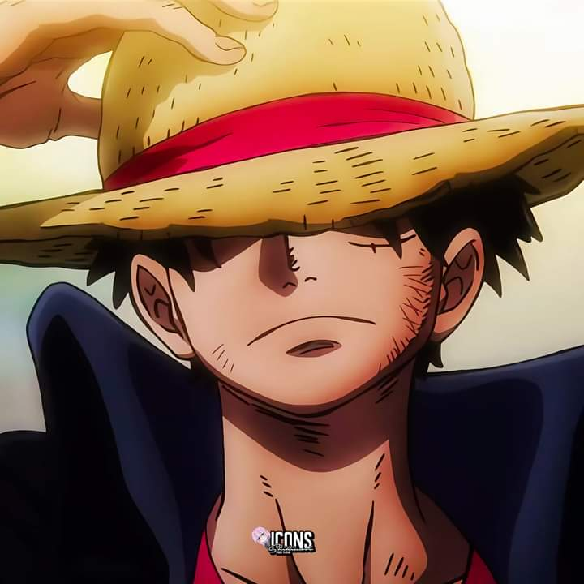
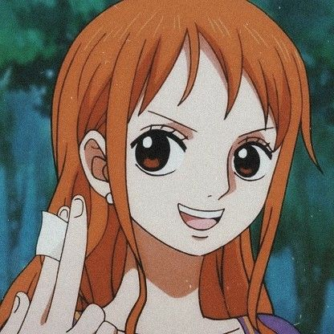
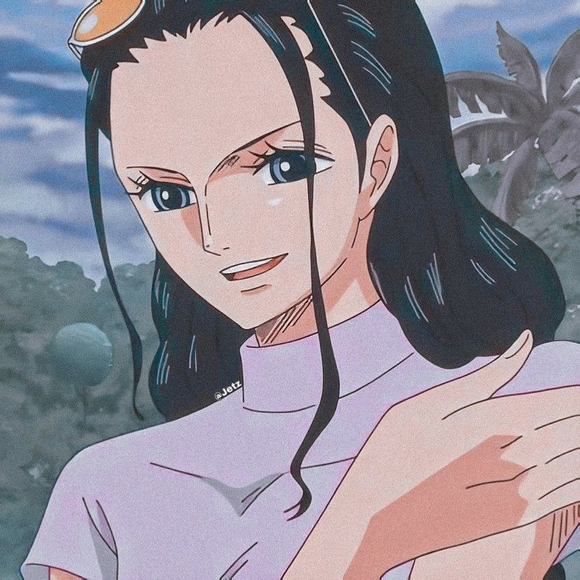
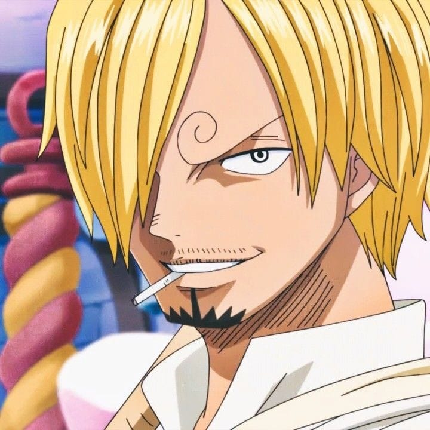

MUGIWARAS

Historia
La serie narra la historia de un joven llamado Monkey D. Luffy, que inspirado por su amigo pirata Shanks, comienza un viaje para alcanzar su sueño, ser el Rey de los piratas, para lo cual deberá encontrar el tesoro One Piece dejado por el anterior rey de los piratas Gol D.
Nakamas
Monkey D. luffy
CapitanMonkey D. Luffy es el protagonista principal del anime y manga One Piece. Su cuerpo está hecho de goma después de comerse una Fruta del Diablo, la Fruta Goma Goma.Es el capitán de la tripulación pirata conocida como los Piratas de Sombrero de Paja, fundada por él mismo para cumplir su sueño de encontrar el One Piece. Es originario del East Blue. Su recompensa es de Berry 1.500.000.000. Forma parte de los llamados "La Peor Generación"; piratas cuya infamia es bien conocida por el mundo.Su principal motivación en la serie es convertirse en el Rey de los Piratas encontrando el One Piece (tesoro que dejó el anterior Rey de los Piratas, Gol D. Roger), una tarea que él continúa sin importar lo que le oponga resistencia, ya que nunca se rinde, sin importar el peligro o el obstáculo que tenga enfrente
Roronoa Zoro
Roronoa Zoro, también conocido como "El Cazador de Piratas Roronoa Zoro", es uno de los personajes principales del manga One Piece.Fue el primer miembro en unirse a Luffy como tripulante, convirtiéndose en el combatiente de la tripulación, y uno de sus dos espadachines, siendo el otro Brook. Es catalogado como miembro del "Trío Monstruoso", ya que es uno de los tres luchadores más fuertes en la tripulación junto con Luffy y Sanji, siendo por ello este último y Zoro vistos como la mano derecha de Luffy. Es famoso por ser un diestro de la espada, siendo usuario del estilo Santōryū, también por su mal sentido de orientación que lo lleva a estar perdiéndose constantemente y por su fuerza sobrehumana. Su sueño es convertirse en el mejor espadachín del mundo.
Nami
Nami es un personaje ficticio del manga y anime One Piece creado por Eiichiro Oda. Nami es introducida como una aliada oportunista del protagonista Monkey D. Luffy, pero que tiene motivos nobles detrás de sus acciones ambiguas. Después de que Luffy la ayuda con sus asuntos personales, Nami se une oficialmente a su tripulación de los Piratas del Sombrero de Paja, donde trabaja como navegante gracias a su conocimiento del clima. Nami tiene un sueño, al igual que sus compañeros, y su objetivo es trazar el primer mapa del mundo. Cuando es necesario, lucha con su bastón Bō, que es capaz de controlar el clima.Nami fue uno de los primeros personajes desarrollados por Oda, con prototipos de ella apareciendo en su trabajo anterior. Inicialmente, ella sería el primer miembro de la tripulación en unirse a Luffy, pero terminó siendo el segundo en la versión final. Con la creciente popularidad de One Piece, Nami se ha convertido en uno de sus personajes más populares y reconocidos, una hazaña sobresaliente para un personaje que pelea poco en un manga con enfoques en luchas. Muy elogiada no solo por su personalidad sino también por su belleza
Sanji
Sanji es el cocinero de la tripulación de Monkey D. Luffy. Su sueño es encontrar el "All Blue", el mar donde se encuentran todas las especies de peces de los cuatro mares, y es el paraíso para cualquier cocinero. Al igual que Zoro, Sanji es bastante más perceptivo de lo que parece y parece darse cuenta de cosas acerca de las situaciones que se les escapan a otros de sus compañeros. No teme mostrar sus emociones en el momento en que las siente y es capaz de llorar o de perder la cabeza en cualquier momento, incluso ofreciendo su propia vida para salvar a su capitán. Es un mujeriego empedernido y pervertido constantemente flirtea con cualquier mujer bella que vea. Debido a esto, Zoro le ha puesto varios títulos como el de "Cocinero Pervertido" o "Sr. Sangrado de Nariz" (Luego del timeskip) Incluso tiene la tendencia de cortejar a una mujer sin importar que esté casada, que lo haya rechazado abiertamente o que sea hostil hacia él. Al conocer a Nami, se enamora locamente de ella y, al conocer a Nico Robin en el barco la aceptó de inmediato. De hecho fue el primer miembro en aceptar a Robin (después de Luffy). A pesar de ello, Sanji es un galán, pues posee un fuerte sentido de caballerosidad, el cual le impide golpear a una mujer a pesar incluso que esta sea un enemigo de la tripulación.
Chopper
Tony Tony Chopper (Tony Tony Choppa, en México), normalmente llamado Chopper a secas o cariñosamente Tony-kun y apodado "El amante del algodón de azúcar","El dueño de las minks" es un personaje de la serie de manga y anime, One Piece. Es el médico de la tripulación de Monkey D. Luffy. Es el único tripulante nacido en Grand Line, en la Isla Drum. Sobre su cabeza pesa la recompensa de 100 berries, siendo la recompensa más baja vista hasta ahora en la serie debido a que es visto como la mascota de la tripulación. Su sueño es expandir sus horizontes y convertirse en un médico capaz de curar todas las enfermedades. La nueva gorra que usa después de los dos años es un protector de su gorra original.

Nico Robin
Nico Robin es un personaje ficticio de la serie manga y anime One Piece. Es la séptima integrante de la tripulación de los Piratas de Sombrero de Paja, teniendo el puesto de arqueóloga, y fue anteriormente la Vice-Presidenta de la organización criminal Baroque Works. Comió una Fruta del Diablo del tipo Paramecia, la Fruta Flor Flor, la cual le permite hacer extremidades de su cuerpo en otras superficies. Es originaria del West Blue. Su sueño es conocer la verdadera historia del mundo investigando en los Poneglyphs.